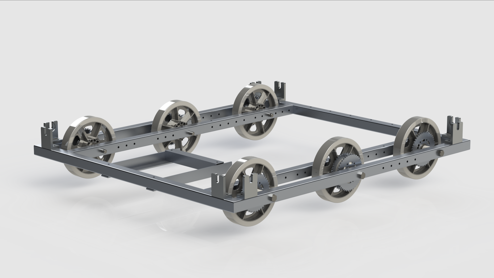
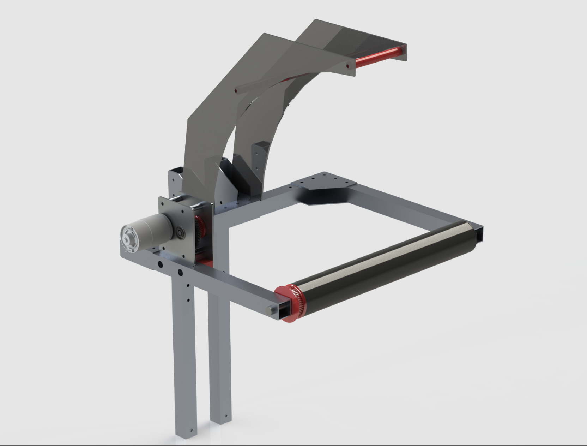
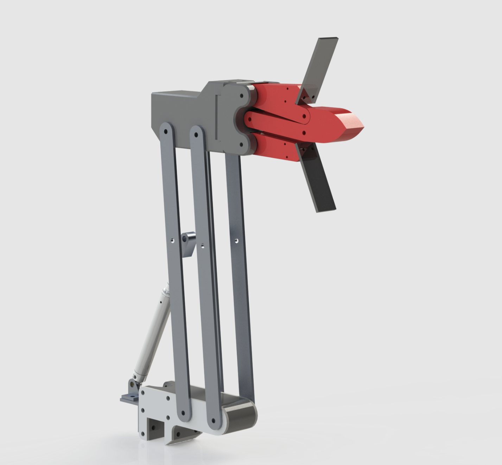
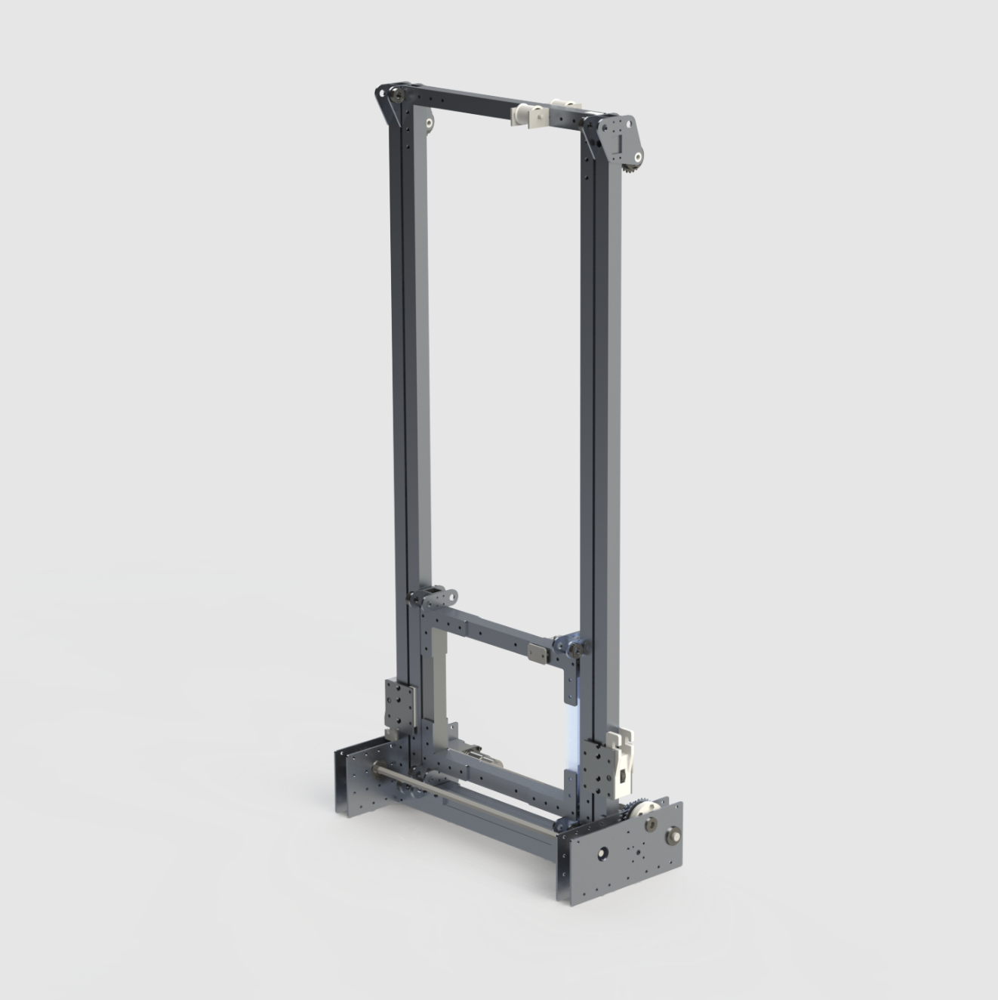

FIRST Robotics 2019 - Team 2702
Overview
I was a part of the 2702 Rebels FIRST Robotics team, a local high-school robotics team that competed in yearly competitions. On this page I will go over our 2019 robot (arguably our most succesful year) and my contributions to the team that year.
Brief overview of the 2019 challange: each game consisted of two alliances, with three teams on an alliance (one team being one robot) attempting to earn the most points. Some objectives the robots would perform were placing thirteen-inch rubber balls of “cargo” into 7ft tall “rocket ships”, patching the holes on the “rocket ships” with nineteen-inch discs known as “hatch panels”, and finally climbing a podium for extra points.
Robot Details

Name: Roadrunner
Win-Lose-Tie: 46-35-0
Awards Won: Engineering Creativity Award, Autonomous Award
Competitions:
- ONT District University of Waterloo Event (Semi-Finalist)
- ONT District Western Engineering Event (Quarter-Finalist)
- Ontario Provincial Championship (Semi-Finalist)
- FIRST International Championships - Detroit (Semi-Finalist)
Drivetrain
After reviewing the game design we identified that our robot would need two key features to be a high-scoring bot. The first is a speedy upper gear that would allow us to zip around the field reducing cycle times, and the second is a strong low gear that would help us prevent from being pushed while trying to score game pieces. Our final design was a six-wheel drive train with two-speed gearboxes driven by two CIM DC motors.
Intake

Our main goal for the intake was to make one reliable and fast enough to say that “if we touch the ball, we own it”. Our intake is a pretty simple mechanism, it consists of the main roller at the front that sucks the ball into its grasp which then activates a limit switch letting the robot know it has control of the ball. It then pivots back into the robot where the ball is held until we are ready to score it. The intake also plays an important role in the climb. At the end of rounds, the robot would drive up to the 6” and 1ft steps and push the front of the robot up while a rack and pinion system would push the rear of the robot up allowing it to drive onto the steps.
Shooter
Once we had control of a ball we then had to score it. To do this the robot would transfer the ball from the intake into the shooter. Once again a limit switch was used to tell when the handoff was successful. Once in the shooter, it would be carried up by the elevator 7ft in the air to be placed and scored.
Hatch Mechanism
The hatches are large polycarbonate disks that needed to place on towers to allow us to score the balls. The hatch mechanism went through multiple major designs changes and many smaller adjustments. The general design was that the mechanism would go through the middle hole of the hatch, and unfold, holding the disk in place. The very first design was several times larger than the final design and required much more driver precision to grab a hatch panel. After several iterations, we came to a design that was thinner and consisted of two fins, which would unfold, gripping the hatch from the opposite side. We also added a limit switch for instant actuation at contact with the hatch panel keeping the “we touch it, we own it” mentality”.
Elevator
The Elevator played a vital role in the ability of the robot. It provided all vertical positioning for the shooter, and hatch mechanism. The cascading elevator had a main carriage that carried the shooter and hatch mechanism on either side. The elevator could reach its max height of approximately 7ft in just over half a second. This was in part due to the two constant tension springs on either side of the elevator taking a total of ten kilograms off the elevator’s lifting weight.